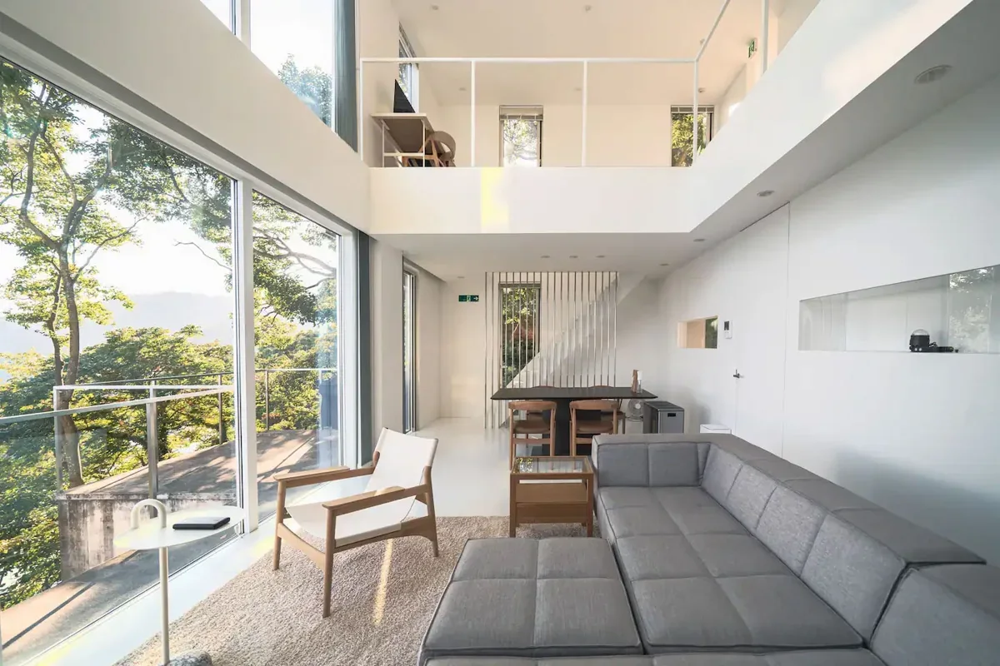

手間を減らす
AIを使う土台と、仕事を前に進める道具。
考える・進める余裕ができるTECHNOLOGY FOR A LIFE WELL LIVED
AIで、手間を減らす。
生まれた時間で、つくる。遊ぶ。会いにいく。
仕事を進めるAIも、自分の声も、一着の服も、仲間と過ごす場所も。日々を少し自由にするためにつくっています。
9つのサービス。それぞれの入口から、ひとつずつ。

思いついたのに、手が足りない。
伝えたいのに、うまく形にできない。
会いたいのに、日々の仕事に追われてしまう。
その、やりたいことと実際にできることの間にある手間を、技術で小さくしたい。自分らしく表現できて、大切な人との時間が増える。そこが私たちの出発点です。
いいAIの先に、いい日常を。
AIを使う土台と、仕事を前に進める道具。
考える・進める余裕ができる自分の声、物語、映画、一着の服へ。
自分らしいものを届けられる柔術で学び、歌い、好きな場所で集まる。
人と過ごす時間が豊かになるこれは目指す体験のつながりです。登録・料金・利用条件はサービスごとに異なります。
気になることを選ぶと、おすすめの入口が見つかります。
利用シーンの提案です。サービス間の自動連携や、生成・製造・予約の完了を保証するものではありません。
まず、ひとつの目的を最後まで叶える。次に、また使いたくなる。その積み重ねから、必要なサービス同士をつなぎます。
teaiの初回成果、MUの購入から配送まで、KOEの声登録から利用まで。入口の不具合と、途中で止まる理由をひとつずつ解消します。
見る数字：初回完了率・未解決の配送遅延
好きな声なら、また聴くか。動画で学んだ技を、練習で試したか。歌や物語を、誰かと楽しめたか。実際の行動で確かめます。
見る数字：7日再訪率・練習実施率・共有後の再生
道場で学んだ仲間が、同じ一着をつくる。滞在先で歌い、思い出を物語にする。自然な需要が生まれた組み合わせから広げます。
見る数字：関連サービス利用率・粗利益・満足度
AIは利用料。ものづくりは商品販売。学びや歌は会員・利用プラン。滞在は宿泊・利用契約。それぞれの価値に対して対価をいただき、品質とサポートを育てます。
優先順位は実需・継続・採算で見直します。売上・利益・継続率の今回の横断集計は未確認です。
9 / 9調査した公開ページに到達（HTTP 200）
2不具合を修正・本番反映中
09.152026年の実測スナップショット
公開画面・スマホ表示・通信エラー・関連コードを確認しました。到達確認は各サービスの全機能の動作保証ではありません。生成・決済・配送・予約などは、各サービス側でご確認ください。
調査方法・根拠・残課題を読む ↗仕事、表現、遊び、居場所。暮らしはひとつのアプリだけでは完結しません。それぞれの場面で「やりたい」を叶える道具をつくると、AIから服や滞在までつながります。共通する判断基準は、人の時間とつながりが豊かになるかです。
必要ありません。歌いたいならuta.live、柔術ならJiuFlow。今日ひとつ役に立つところから始めてください。
SOLUNAは、毎年帰る場所を持つための滞在プランやリゾートの案内。enabler.funは、熱海・弟子屈・ハワイのヴィラを選び、物件詳細や予約先を見る入口です。契約や最短泊数はプラン・物件ごとに確認できます。
kamishibai.tvは絵・声・字幕で、説明や贈り物を伝える紙芝居。movie.liveは6場面の絵とナレーションで、短編映画のような物語をつくる入口です。どちらも入力から生成する仕組みですが、生成の所要時間は状況により変わります。
START WITH ONE THING.